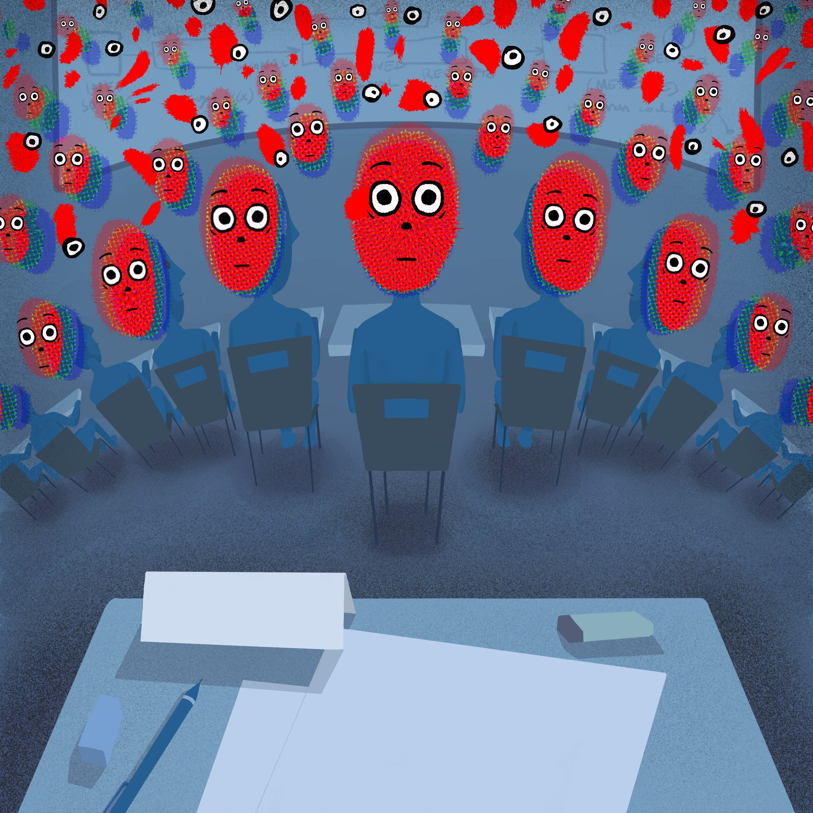
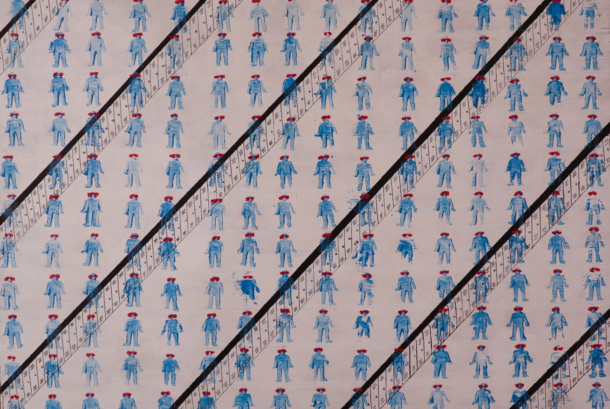
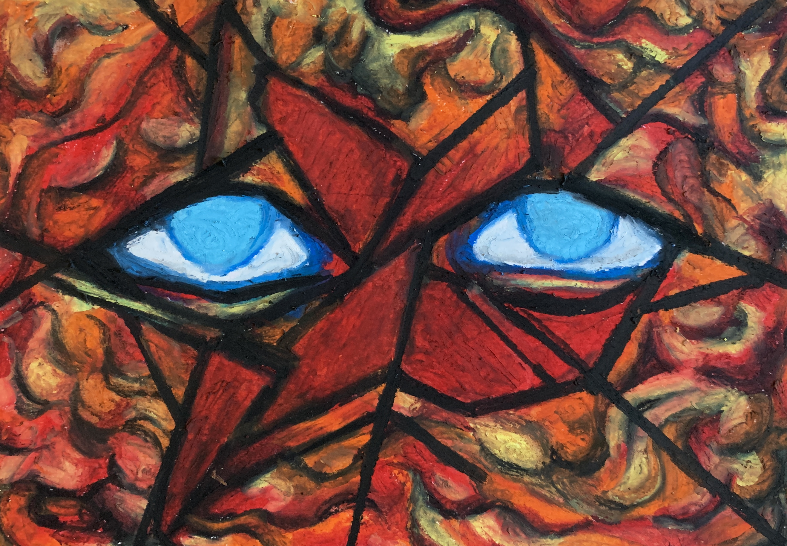
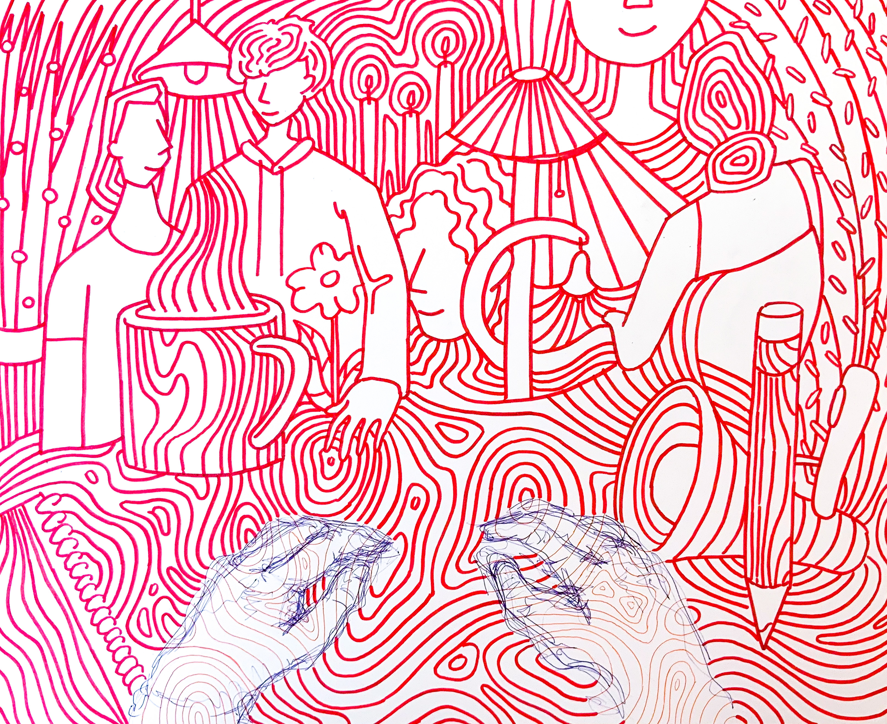

Discomfort
Gloria Zhu

“They’re All Staring at Me”
12”x12”; Digital; Dec 2020

But That’s What Everyone Thinks
24”x18”; Rubber stamp, acrylic paint, pen; Dec 2020

“Clamped On”
8”x6”; Oil pastel; Jan 2021

“Losing Grasp”
8”x8”; Expo marker, pen; Jan 2021

“Spaghetti”
17”x14”; Expo marker, pen; Feb 2021
My work is centered around the consuming feelings of alienation and anxiety, especially in
social or public situations. The motif of eyes is repeated throughout the series, emphasizing
how these feelings come about as a result of personal perception and mental state rather than
outside influences. I intend to depict both the capability to feel extremely embroiled in a
space, as if everyone is staring at me, as well as the almost opposite feeling that one is
alienated and a million miles away from everyone else; part of my goal is to point out the irony
of how we see ourselves from our perspective as the center of the universe, when in reality we
all look the same -- and anonymous -- in a crowd.
I picked materials according to what I thought would best suit the purpose of each piece; for example, I would use oil pastel for a piece that was meant to be very “chunky” and heavyset, or marker for one meant to be more clean and uniform. However, despite the different materials, I hope the body of work can still be kept cohesive through common ideas and the warm/cool color palette (usually red vs. blue hues, which indicate the “nervous” vs. “calm” regions of a piece).
I picked materials according to what I thought would best suit the purpose of each piece; for example, I would use oil pastel for a piece that was meant to be very “chunky” and heavyset, or marker for one meant to be more clean and uniform. However, despite the different materials, I hope the body of work can still be kept cohesive through common ideas and the warm/cool color palette (usually red vs. blue hues, which indicate the “nervous” vs. “calm” regions of a piece).
Discomfort
Gloria Zhu
“They’re All Staring at Me”
12”x12”; Digital; Dec 2020
But That’s What Everyone Thinks
24”x18”; Rubber stamp, acrylic paint, pen; Dec 2020
“Clamped On”
8”x6”; Oil pastel; Jan 2021
“Losing Grasp”
8”x8”; Expo marker, pen; Jan 2021
“Spaghetti”
17”x14”; Expo marker, pen; Feb 2021
o